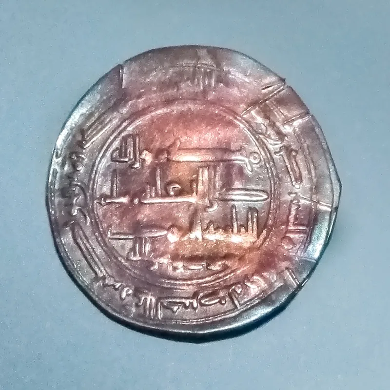
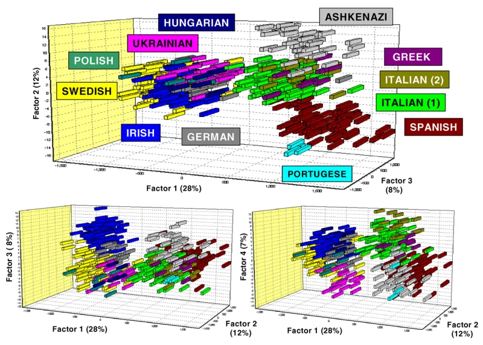

The text settles it — but concede the grievance first, or nothing will be heard.
That Ashkenazi Jews come from converts, not from Israel. Ashkenazi means Jews whose families lived in central and eastern Europe.
The claim is that they descend from the Khazars — a people in the Caucasus whose rulers became Jewish in the 700s. So they hold an identity that is not theirs.
Not from the movement. Ernest Renan floated it in 1883.
Arthur Koestler popularised it in The Thirteenth Tribe in 1976. It has since been used by several very different political movements, which is worth knowing before you repeat anything about it.
Studies keep placing Ashkenazi Jews with Middle Eastern peoples, not with peoples from the Caucasus. Behar's study sampled the Khazar region on purpose, to test this.
One paper argued the other way — Elhaik, in 2013. Name it rather than hide it.
The field looked at it and did not accept it.
That genetics is not their standard and should not be anyone's. The Bible knows nothing about haplogroups.
Israel is defined by covenant, not blood chemistry. That is a fair point about method, and it cuts both ways.
This one has a clear answer at the level of evidence. But if they reject genetics as a standard, you cannot then use genetics to settle it either.
"If genetics can't decide who Israel is, can it decide who isn't?"


Genetics is not their standard. Christ warned of people who falsely claim the name.
The camps reply that population genetics is not their standard, and should not be anyone's. The Bible knows nothing of haplogroups. Israel is defined by covenant, not by blood chemistry.
They point out that Ashkenazi genomes show a lot of European ancestry. That is just what a convert people would show. And European ancestry is what they are alleging. They cite Eran Elhaik's 2013 paper, which argues for a Khazar component. They treat the field as split rather than settled.
Above all they press Revelation 2:9 and 3:9. Christ named a group who would claim the name Jew falsely. A prophecy of a counterfeit needs a counterfeit. Holding the land, holding the name, and being known by all as Israel is exactly that profile, they argue.
The evidence settles it. But note what this teaching has cost real Jewish people.
Elhaik 2013 is a real citation. Name it rather than hide it. But it is a minority view that the field looked at and turned down. Behar's study sampled the Khazar region on purpose, to test it.
The covenant-not-blood objection is genuinely good. It also cuts in a direction they may not expect. If covenant makes Israel rather than descent, their own case goes with it. That case rests entirely on descent from the enslaved. Revelation 2:9 speaks to a first-century church in Smyrna under local pressure.
Note too what this doctrine costs. It has given cover to real antisemitic harassment. The ADL logged eight antisemitic incidents from extremist Hebrew Israelite groups in 2022 alone.